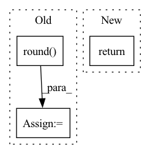

Pattern ID :13721
Before Change
def save_img(x: torch.Tensor, img_path: str) -> None:
with torch.no_grad():
x = 255 * x
x = x.round() .clamp(min=0, max=255).byte()
x = x.squeeze(0)
x = x.cpu().numpy()
x = np.transpose(x, (1, 2, 0))
imageio.imwrite(img_path, x)
returnAfter Change
def save_img(x: torch.Tensor, img_path: str) -> None:
x = tensor2np(x)
imageio.imwrite(img_path, x)
return
In pattern: SUPERPATTERN
Frequency: 3
Non-data size: 3
Instances Fragment ID: 45900175
Project Name: thstkdgus35/bicubic_pytorch
Commit Name: 3c12a18f3d26f7db7b0ffdaa7e858a6fd31347f3
Time: 2020-07-24
Author: thstkdgus35@snu.ac.kr
File Name: utils.py
M Class Name: AnonimousClass
N Class Name: AnonimousClass
M Method Name: save_img(2)
N Method Name: save_img(2)
M Parent Class:
N Parent Class:
M File Name: utils.py
N File Name: utils.py
M Start Line: 41
M End Line: 49
N Start Line: 58
N End Line: 60
Before Change
bboxes_xyxy[:,3] *= h
arr = bboxes_xyxy.numpy()
arr = arr.round() .astype(int)
img = img.permute(1, 2, 0)
img = img.numpy()
img = (img * 255).astype(np.uint8) After Change
text += f" {bbox[4].item() :.2f}"
img_ = cv2.putText(img_, text, (bbox[0], bbox[1]), cv2.FONT_HERSHEY_DUPLEX, 0.75, (255, 255, 255))
return img_
def get_bboxes_from_anchors(anchors, confidence_threshold, iou_threshold, labels_dict):
nbatches = anchors.shape[0] Fragment ID: 45900180
Project Name: vcasecnikovs/yet-another-yolov4-pytorch
Commit Name: 8a7cd85191f98ca0ec4ed7bf130203a240834e91
Time: 2020-05-30
Author: casecnikov@gmail.com
File Name: utils.py
M Class Name: AnonimousClass
N Class Name: AnonimousClass
M Method Name: get_img_with_bboxes(5)
N Method Name: get_img_with_bboxes(4)
M Parent Class:
N Parent Class:
M File Name: utils.py
N File Name: utils.py
M Start Line: 28
M End Line: 51
N Start Line: 27
N End Line: 56
Before Change
)
bpe, bpe_lens = bpe.to(params.device), bpe_lens.to(params.device)
abs_length = torch.round( bpe_lens * bpe.shape[1])
// Append eos token at the end of the label sequences
bpe_with_eos = append_eos_token(
bpe, length=abs_length, eos_index=params.eos_indexAfter Change
predictions, tokens_eos, length=rel_length
)
return loss
def fit_batch(self, batch):
Train the parameters given a single batch in input Fragment ID: 45900167
Project Name: speechbrain/speechbrain
Commit Name: 37cd9e704357d544eb54e43ce4e4e86f96ac89a0
Time: 2021-01-10
Author: jzhong9@u.rochester.edu
File Name: recipes/LibriSpeech/LM/experiment.py
M Class Name: LM
N Class Name: LM
M Method Name: compute_objectives(4)
N Method Name: compute_objectives(4)
M Parent Class: sb.core.Brain
N Parent Class: sb.core.Brain
M File Name: recipes/LibriSpeech/LM/experiment.py
N File Name: recipes/LibriSpeech/LM/experiment.py
M Start Line: 61
M End Line: 80
N Start Line: 27
N End Line: 36